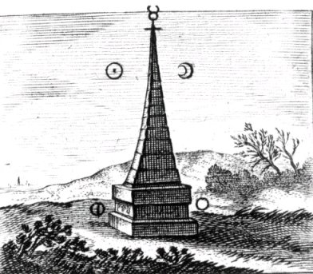
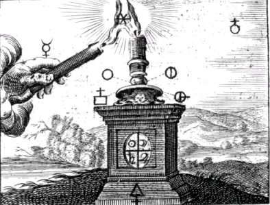
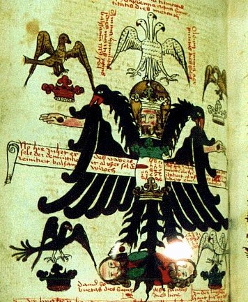
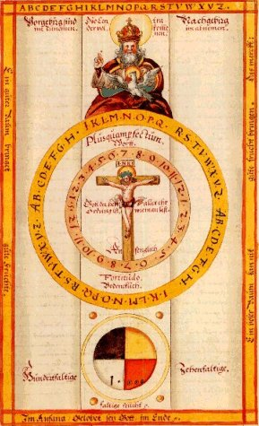

Emblema XIX.
revu le 11 janvier 2004
Si de quattuor unum Occidas, subito mortuus omnis erit.
(Si des quatre tu en fais périr un, aussitôt tous seront morts1.)
Quatre frères se tiennent en une longue file :
Tout le poids de la terre est aux mains du premier ;
Les autres ont pour part l’eau, l’air, le noble feu.
Pour les faire périr cause la mort d’un seul.
Unis dans un commun trépas ils disparaissent,
Car la nature les lia d’étroites chaînes2.
Suivant la fable imaginée par les poètes, Géryon3 était un roi d’Espagne doté d’un triple corps ; il possédait des bœufs de couleur pourpre4 à la garde desquels étaient préposés un chien bicéphale5 et un dragon à sept têtes6. On dit que Géryon est le fils de Chrysaor, né lui-même du sang de Méduse7, et que le Dragon est l’enfant de Typhon et d’Echidna8. Comme ces contes, si on les prend à la lettre, ne s’accordent à aucune vérité historique ou matérielle mais qu’ils confirment toutes les allégories chimiques, c’est à bon droit que nous les avons ajoutés à celles-ci. Par le triple corps de Géryon nous entendons trois faces vues en un seul père, selon le sentiment d’Hermès, ou, comme le veulent d’autres, quatre faces qui se rapportent aux quatre éléments. Du carré en effet il faut faire un triangle, et de même qu’un cercle a donné naissance au carré, le triangle doit revenir à la forme circulaire9. II règne entre les corps de Géryon et les éléments une telle consanguinité, une telle conjonction naturelle, que si l’on a vaincu ou tué l’un d’eux, les autres tombent et se putréfient d’eux-mêmes, sans qu’on ait a fournir un effort manuel quelconque10.
A propos des êtres au corps double il est connu que si l’un meurt, l’autre dépérit de son côté. Ainsi nous avons vu en Italie un enfant de quatre ans doté d’un double corps, qui cachait dans son propre corps la tête de son frère qui lui était accolé ; les autres organes pendaient jusqu’à l’ombilic où ils étaient reliés, nés ensemble. Et si l’on touchait avec une certaine force dans la région des pieds ou des mains celui qui formait excroissance et qui était porté par l’autre, étant beaucoup plus petit, le plus grand éprouvait de la douleur, de même qu’il sentait la faim si le petit était privé de nourriture. Telle est l’alliance étroite, la sympathie de nature selon laquelle les membres et les parties d’un corps unique ou né lié à un autre ont des rapports entre eux et sont affectés en eux-mêmes les uns par les autres. Si l’un est sain et indemne, les autres ne demeurent pas forcément sains et indemnes, mais si l’un est atteint, les autres souffrent avec lui et périssent du même mal. Ainsi lorsque quelqu’un réalise un gain important, son voisin n’en tire aucun avantage, mais s’il subit un incendie, il en résulte pour le voisin beaucoup de mal. Car si le mur du voisin est en feu, l’affaire te concerne.
Que le meurtre de l’un des quatre frères entraîne la mort des trois autres, une telle proposition ne sonne pas faux, car cela peut se produire de plusieurs manières : ou bien, nés simultanément du même père et de la même mère, ils ont connu des fins d’existence identiques, comme l’avaient été leurs débuts, ainsi que nous l’avons lu à propos de certains hommes, en raison peut-être de l’inclination des astres11 ; ou bien parce qu’ils adhèrent l’un à l’autre non seulement par l’esprit mais aussi par les membres du corps12 ; ou bien par l’épouvante de l’esprit, une vive imagination, au cours d’une épidémie13 ; ou bien encore à la suite d’un vœu scellant une alliance. En Inde, sous la domination du fameux grand Mogol (celui qui y règne actuellement est le neuvième descendant de Tamerlan), habite un peuple païen portant le nom de Pythagoriciens qui, depuis les temps antiques jusqu’à ce jour, observe cette coutume que, si le mari vient à mourir, sa femme est brûlée par le feu, ou, comme cela se passe aujourd’hui, vit dans le plus complet déshonneur, abandonnée de tous et comme tenue pour morte. Le but de cette institution fut d’empêcher que les femmes ne portent atteinte à la vie de leurs maris par le poison si elles ne voulaient pas mourir elles-mêmes.
Ainsi, dans l’œuvre philosophique, lorsque l’un des frères meurt, les autres périssent par le feu, non sous la contrainte mais spontanément, pour que les survivants ne demeurent pas dans la tristesse et le déshonneur. Et si l’on frappe l’un d’eux avec un bâton, un fer ou une pierre, il entreprendra une guerre intestine avec ses frères, comme on le voit dans l’histoire des fils de la Terre nés des dents du dragon, lorsqu’ils se dressèrent contre Jason et ailleurs encore contre Cadmus, et ainsi tous s'entre-tuent et tombent14. Touche en effet ou blesse celui qui porte l’air, et lui-même se dressera contre deux à la fois, ceux qui sont le plus proches de lui, le porteur d’eau et le porteur de feu15, mais ceux-ci s’opposeront à la fois au porteur de terre et à celui qui entama le premier combat, jusqu’à ce qu’ils s’infligent et reçoivent des blessures mutuelles par lesquelles ils s’éteignent. On les a en effet comparés à des frères, car plus forte et plus vive est leur affection, plus ils sont irréconciliables une fois qu’ils ont commencé à se haïr16 ; alors ils se poursuivent jusqu’à la mort, de même que le miel le plus doux engendre la bile la plus amère dans un estomac trop échauffé ou un foie corrompu. Tue donc le vif, mais de manière à ressusciter le mort, sinon cette mort de la victime ne t’aura servi à rien. Car la mort le révélera au moment où il ressuscitera, et la mort, les ténèbres et la mer s’enfuiront loin de lui, comme Hermès l’atteste, et le dragon qui gardait les ouvertures fuira les rayons du soleil17 ; notre fils qui était mort vit et, Roi par le feu, vient. Belin fait entendre la même chose dans sa métaphore citée par le Rosaire lorsqu’il dit :
« Et que ceci se réalise, lorsque tu m’auras extrait en partie de ma propre nature et que tu auras extrait en partie mon épouse de sa nature, et qu’ensuite vous fassiez mourir les natures, et nous nous levons selon une résurrection nouvelle et incorporelle, car ensuite nous ne pouvons pas mourir. »18
Notes1. Ce chapitre nous fait parcourir à nouveau l'univers des Quatre eléments de Platon et d'Empédocle. Il ne dit rien de vraiment nouveau et que nous ne sachions déjà. La chose intéressante en soi est ce principe de liaison que Maier croit trouver dans les Eléments. Bien sûr, tout cela doit être compris avec un grain de sel. [sur les Quatre eléments, voyez l'Atlas de Chevreul, la Cristallogénie et certains chapitres antérieurs de l'Atalanta fugiens et l'Idée alchimique, II.] Notez que chacun des quatre hommes est porteur d'un élément, avec de la gauche vers la droite : le feu, l'air, l'eau et la terre. Les éléments sont bien visibles sur l'agrandissement [cliquez sur la vignette en couleur].

FIGURE I
(Le Lion d'Or ou Vinaigre des Sages - De Goude Leeuw, 1675 : les deux éléments quintessencés)La figure I donne à voir le fondement de l'oeuvre : Nitre philosophique et circulation perpétuelle. Sur ce socle tumulaire s'étagent les douze degrés de la Sapience. Au sommet, le Mercure. De part et d'autre, Gabricius et Beya.
2. Si l'on veut démêler la trame, il faut par analogie voir un autre texte qui traite de façon canonique des Eléments. Il s'agit de la Philosophie Naturelle des Métaux de Bernard le Trévisan [le Bon Trévisan ou Bernard de la Marche Trévisane]. Voici un premier extrait :[...] vous devez savoir que la Matière est cette chose de quoi est faite une Forme, ou quelque chose; comme la première Matière de l'Homme est le Sperme d'Homme et de Femme. Mais les Ignorants cuident entendre ce mot, de Réduction à la première Matière, ainsi, c'est à savoir de la réduire, comme ils disent, es quatre Eléments. Car les quatre Eléments sont la première Matière des choses créées. Ils disent vrai que la première Matière sont les quatre Eléments; mais c'est à dire, [...] la première Matière de la première Matière ; c'est à savoir les Eléments tous quatre, ce sont les choses de quoi sont faits le Soufre et le Vif-Argent, lesquels sont la première Matière des Métaux.A travers cette traduction, sans doute imparfaite, Trévisan veut signifier que les quatre éléments sont réduits à deux principes : le Soufre et le Mercure, c'est-à-dire l'Âme et l'Esprit, soit encore le Feu et l'Air. Second extrait :Géber dit en sa Somme, lequel Géber parle dûment en aucuns lieux; combien que tout son Livre soit Sophistique et Erronneux : Nous avons tout expérimenté, et par raisons respectables; mais nous n'avons ni ne saurions trouver chose demeurante, ni constante, ni permanente, que la seule Humidité visqueuse, laquelle est la Racine de tous les Métaux : car toutes les autres Humidités, par le feu légèrement s'en vont, et s'évaporent, et se séparent l'un Elément de l'autre; comme l'Eau par le feu, l'une partie s'en ira en fumée, l'autre en Eau, et l'autre en Terre demeurant au fond du Vaisseau. Et ainsi se séparent les Eléments de toutes choses : car ils ne sont pas bien unis en homogénéisation, et quelque petit feu que vous fassiez, quelque chose que vous y mettiez, se consumera et se séparera de sa naturelle Composition. Mais l'Humidité visqueuse, c'est à savoir Mercure, jamais ne s'y consume, ne se sépare de sa Terre, ni de son autre Elément : car ou tout demeure, ou tout s'en va, et chose quelle quelle soit ne s'y diminue du poids.Cette humidité visqueuse ne peut être que le Mercure mêlé des chaux métalliques. Sous quel arcane les alchimistes ont-ils voilé ces chaux ? Celle que l'on trouve citée la plus fréquemment dans les textes est le Rebis, chose double, confection résultant d'un Mixte qui participent du Soufre blanc [Corps, Sel, Arsenic de Geber] et du Soufre rouge [teinture, Âme, sang du Lion vert]. L'ensemble Mercure - Rebis formant le Compost philosophal. Troisième extrait :Car l'Engin de l'Art n'introduit rien de nouvel en Nature en sa Racine ; mais l'Art aidé par Nature dûment en l'enseignant : et Nature aidée par l'Art en lui parachevant ses désirs profonds, en toute intention de bon Ouvrier. Item, Morien dit : Mêlez et jetez la Médecine dessus les Corps diminués de perfection, et dit Que ce n'est autre chose qu'Argent-vif, par Art exalté sur l'Argent-vif imparfait. Et ainsi ils montrent clairement que ce n'est autre chose qu'Argent-vif. Item, Maître Arnaud de Villeneuve dit : Toute ton intention soit à digérer et cuire la Substance Mercurieuse, et selon sa dignité, elle dignifiera les Corps; qui ne sont autre chose que Substance Mercurieuse décuite.Nous tenons ici, semble-t-il, la clef de l'énigme où tant d'alchimistes ont dit qu'il ne fallait rien ni ajouter, ni retrancher au vase de nature, une fois débutée la Grande coction. C'est ce qu'exprime Trévisan quand il professe que l'Art n'introduit rien de nouveau dans le produit obtenu par les moyens de Nature. Et que la Racine dont il parle est l'humide radical métallique, c'est-à-dire la quintessence tant cherchée par les apprentis...Morien [Entretierns de Calid à Morien] parle de la « Médecine » en des termes qui lèvent toute équivoque et qui montrent à quel point de dérive les Souffleurs ont pu arriver à force d'interprétation délirante ou d'escroquerie. Car cette Médecine n'est autre que celle qui permet d'augmenter les Corps en perfection, c'est-à-dire de transformer des substances dissoutes et amorphes en substances cristallines jointes. Chose qui ne peut être obtenue que par le Mercure, agent et non fin. Ce qui, enfin, explique les propos attribués à Maître Arnaud quand il dit que les Corps, réincrudés, se sont autre que la matière qui apparaît au départ progressif du Mercure, lors de l'abaissement lent de la température.
FIGURE II
(Le Lion d'Or ou Vinaigre des Sages - De Goude Leeuw, 1675 : le triple Sel)La figure II montre le triple Sel d'Hécate. Le fondement associe le symbole du Soufre, en bas, celui du tartre à gauche [mais renversé, ce qui veut dire qu'il ne s'agit pas de tartre vulgaire] et à droite, le signe du nitre vitriolé. On voit par de fines lignes les correspondances entre le tartre et le salpêtre d'une part, et entre le O du Mercure et le nitre vitriolé. Le tout tient, comme Hécate, de Séléné, d'Artémis et de Coré - Perséphone. On voit, du reste, Coré en haut et à droite, sous l'hiéroglyphe de la stibine. Et Artémis, en haut à gauche, dans le croissant lunaire de l'idéogramme du Mercure, formé du creuset, du cercle et du croissant.
3. Pour la fable de Geryon et Orthros, voir Fontenay - Notez que le triple corps de Geryon l'apparente au Compost, qui, comme on l'a dit, est composé de trois choses en une : le Rebis, chose double et le Mercure.
4. le Taureau ou le boeuf sont apparentés au Rebis. Ils ont souvent chez les auteurs, des pieds d'airain et portent parfois une tache blanche au front. Leur couleur pourpre signale un stade assez avancé de la Grande coction.
5. Orthros. Il faut noter l'importance extrême que joue le chien dans l'Art d'Hermès. On rappellera qu'Artéphius parle du chien d'Arménie et de la chienne du Corascène quand il veut figurer les natures métalliques ; que le chien est le fidèle ami du berger qui guide le troupeau ; que Fulcanelli, à plusieurs reprises, a donné à voir des images de chien dans sa trilogie. Le chien et les deux colombes dans le Mystère des Cathédrales ; le chien du bâteau Argos de la fontaine du Vert-Bois. Liste non limitative. Voyons ce que dit Pernety du célèbre Cerbère :Cerbère. Dans le sens des Chymistes vulgaires, c’est le nitre; mais les Philosophes entendent bien autre chose par le Cerbère de la Fable. Les Poëtes Philosophes ont imaginé qu’un chien à trois têtes, la gueule béante, gardait la porte des Enfers, et qu’il y était enchaîné par une chaîne triple. Les Alchymistes prétendent que toutes les fables des anciens Poëtes ne sont que des énigmes, dont ils se sont servis pour cacher les opérations de la pierre philosophale. Ils disent en conséquence qu’il faut entendre par Cerbère ce chien à trois têtes, ou la matiere de la pierre philosophale composée de sel, de soufre et de mercure, renfermée dans le triple vase des Philosophes, qui sont les trois chaînes qui lient Cerbere; ou que la matiere est elle-même le palais de Pluton, Dieu des Enfers, et que le triple vaisseau est le chien à trois têtes qui garde la porte du palais et en empêche l’entrée. Cette derniere explication me paraît plus vraisemblable; car il est dit que Cerbère vomissait du feu; ce qui est le propre des fourneaux. On ne doit pas cependant entendre par-là que les fourneaux des Alchymistes vomissent du feu comme ceux des Chymistes ordinaires; car le feu de la Philosophie Spagyrique n’est pas le feu vulgaire, mais le feu de la nature, un feu qui échauffe sans brûler. Et qui connaîtra ce feu, et la maniere de le graduer, est bien avancé dans la science Hermétique. Que celui qui veut étudier cette science ait donc Hercule, et sache le marier à propos avec Thésée son compagnon inséparable, il aura bientôt le secret des trois règnes. [Pernety, Dictionnaire]Il se peut que les chimistes vulgaires aient à bon droit utilisé le nom de ce chien de l'enfer pour qualifier le nitre. Car le nitre vulgaire peut tout à fait servir à la préparation du Mercure dans son premier état. Cerbère, alors, serait le triple Mixte dont on a parlé à la note précédente. Sur Pluton et Hercule, voyez les sections correspondantes. Voici un second extrait du Dictionnaire de Pernety :Chien. Cet animal était en grande vénération chez les Egyptiens, sous le nom d’Anubis. Il était chez eux le symbole du Mercure des Sages; aussi les Anciens l’avaient-ils consacré à ce Dieu ailé. Plusieurs ont donné le nom de Chien à la matiere du grand œuvre. L’un l’appelle Chien d’Arménie, l’autre dit que le Loup et le Chien se trouvent dans cette matiere; qu’ils ont une même origine, et néanmoins que le Loup vient d’Orient, et le Chien d’Occident. Rafis. L’un représente le fixe et l’autre le volatil de la matiere.Orthros semble donc réunir les qualités de Cerbère sous les espèces du chien mythologique, du Loup qui vient d'Orient et du Chien qui vient d'Occident.
CHIEN D’ARMÉNIE est un des noms que les Philosophes Hermétiques ont donné a leur soufre, ou au sperme mâle de leur pierre.
Chienne de Corascene. Est un des noms que les Philosophes chymiques ont donné à leur mercure, ou sperme féminin de leur pierre.
6. Le dragon à sept têtes est régulièrement évoqué dans les textes. On le trouve par exemple, dans la Fontaine des Amoureux de Jean de Meung. Il figure l'activation du Mercure sous l'effet des fruits de l'Arbre solaire. Naturellement, l'Artiste doit choisir ses fruits à propos et c'est pourquoi ce dragon est aussi représenté sous les traits de l'hydre, dont le nombre de têtes peut varier de trois à cinquante...
FIGURE III
(hydre philosophique, exposition de mss alchimiques, bibliothèque universitaire de Bâle, 1999)7. Il s'agit là d'un point capital. Lorsque Persée décapite la Gorgone, c'est-à-dire ouvre la matière première, du sang de Méduse jaillit le cheval Pégase et Chrysaor [Chrysaor. Fils de Neptune et de Méduse, selon quelques-uns; et selon d’autres, né du seul sang qui coula de la blessure faite à Méduse par Persée. Chrysaor fut pere de Geryon. Voyez cette fiction expliquée dans les Fables Egypt. et Grecq. dévoilées, liv. 3, ch. 14, 8 3. Dictionnaire, Pernety]. Or, de Pégase et de Chrysaor, l'un est volatil et l'autre, fixe. L'un forme le Mercure, l'autre forme le Sel. Tous deux pourtant, naissent d'un même corps dont nous donnons le nom vulgaire à la section Fontenay.
8. sur Typhon et Echidna, voyez la légende des Argonautes, section chimie et alchimie, l'Atalanta, XIII et l'Introïtus, VI. Nous avons exposé des vues assez complètes sur le symbolisme de Typhon en relation avec l'agent de corruption dans l'humide radical métallique. Quant à Echidna, elle porte en elle le principe à la fois féminin et visqueux de l'oeuvre. C'est dire si elle est de vertu mercurielle. Dès lors, si l'on rassemble les deux monstres fabuleux, on peut y voir dans l'un le principe sulfureux, et dans l'autre le principe mercuriel. rien d'étonnant que leur rejeton, Cerbère, soit ce chien tricéphale que nous avons évoqués note 5.
9. Maier revient aux Quatre Eléments. L'un des emblèmes de l'Atalanta [le n° XXI] exposera de façon exotérique le symbolisme de ces éléments.
FIGURE IV
(extrait de : Martin Sturtz, De humido radicale, 1597, Ms. K II 8, 15r, Universität Bibliotek Basel. )On peut voir ces Quatre Eléments au bas d'une planche du De Humido Radicale de Martin Sturz. Il n'est que de voir les couleurs du cercle situé au bas de la figure IV pour montrer qu'au noir correspond la terre [dissolution] ; au blanc correspond l'air [sublimation] ; au jaune l'eau [maturation] et au rouge, le feu [rubification]. notons, par parenthèse qu'attribuer à l'eau la couleur bleu s'avère ici trompeur. Sur le plan des signes zodiacaux, la correspondance est la suivante ; respectivement : Capricorne, Cancer, Balance et Sagittaire. Pour l'ordre des correspondances, reportez-vous respectivement à l'Atalanta, XLIII - XLII - XLVI - XLV et au zodiaque alchimique [1, 2]
10. Maier insiste sur la solution du Mercure, premier moteur qui forcera les autres éléments à le suivre et à précipiter la putréfaction. Evidemment, Maier dit « l'un d'eux » et se montre un peu envieux ici. Car on n'obtiendra nulle solution du Corps ou de l'Âme qu'on n'ait obtenu d'abord celle du Mercure.
11. Nés de la même mère, tel semble bien être le cas de certaines substances que nous avons isolées à force de scruter les textes. Nous parlions à l'instant de Chrysaor et de Geryon. Dans le même ordre d'idées, les spagyristes reconnaissent l'identité formelle de la terre pure de Chio ou de Samos et de la pierre du Levant ou encore de la pierre de Jésus. Voyez ici la réincrudation.
12. C'est nommer les éléments du Rebis, chose double. Dans un premier temps, l'hermaphrodite hermétique s'engendre, en effet, par Esprit avant de se concevoir lui-même par Corps.
13. C'est qu'ici le feu aura été trop poussé et les fleurs brûlées. Certains médaillons du Jardinet hermético-spagyrique de Stolzenberg pourront aider l'impétrant. En particulier, l'une où l'on voit un audacieux souffleur choir d'un échelle. E. Canseliet reproduit la gravure dans son Alchimie Expliquée sur ses Textes Classiques.
14. sur cette fable d'Ovide, voyez : 1, 2, 3, 4, 5, 6, -
15. Cette allégorie est logique. Le FEU des Sages procède en effet de l'AIR et de l'EAU ; voyez les équations des éléments dans la section Cristallogénie, introduction. Comme l'EAU s'évapore [mais l'eau des alchimistes n'est pas l'eau vulgaire] en AIR et que le FEU se développe dans l'AIR, il est normal que si l'on frappe le porteur d'AIR, les deux autres porteurs, faute de médiateur, seront touchés à leur tour.
16. Nous avons déjà parlé de ces contraires : voyez Atalanta, VII.
17. C'est-à-dire que le Mercure se volatilisera progressivement, condition essentielle de la parthénogénèse hermétique. Notez que le Soleil désigne ici le Soufre réincrudé.
18. Il ne s'agit pas du Rosaire d'Arnaud de Villeneuve. Le texte peut être consulté sur le site hermétisme et alchimie. Belin, en une phrase, dit tout de la solution, de la putréfaction et de la réincrudation des Corps.